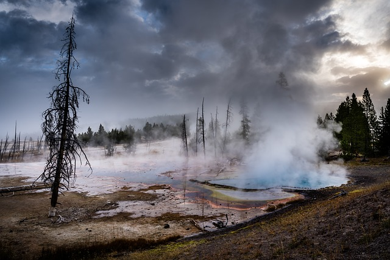
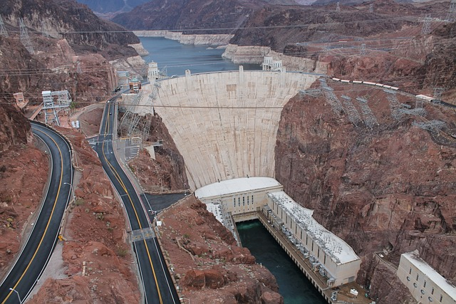
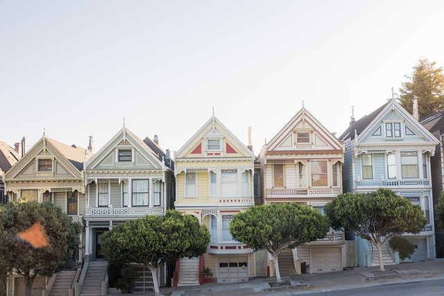
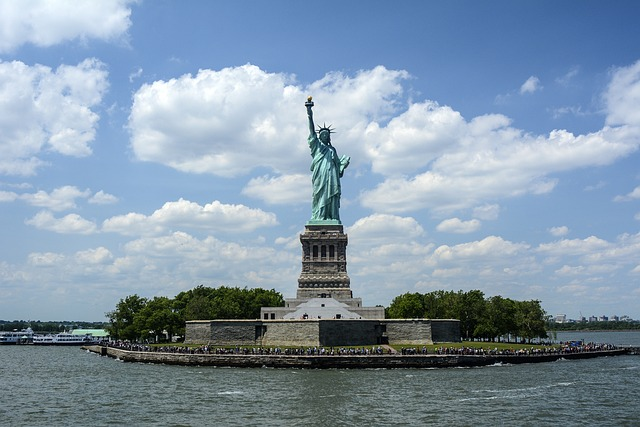
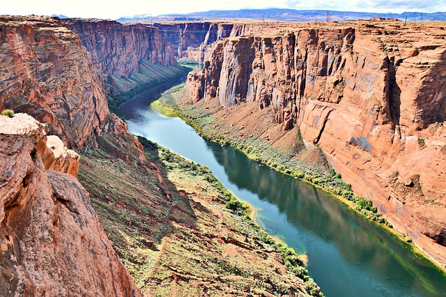
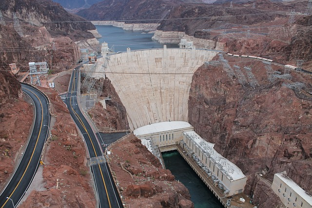
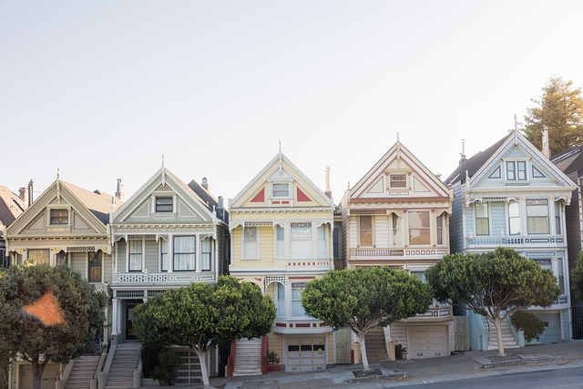
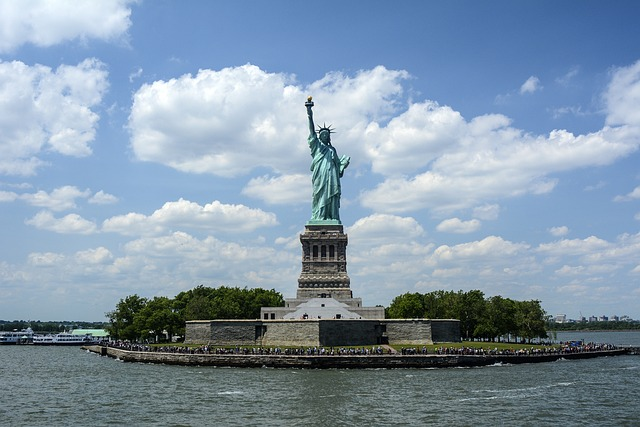
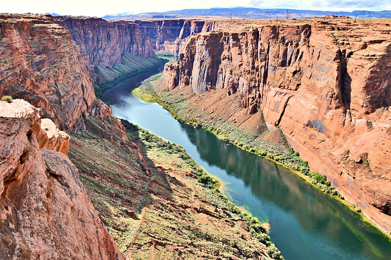

Landmarks
Modal Example
Click on the button to open the modal.
Landmarks
From icons like the Statue of Liberty to vast natural wonders like the Grand Canyon, there are many famous US landmarks that are must-sees! The Grand Canyon, located in the "Grand Canyon State," is a geological wonder formed millions of years ago by the Colorado River. The canyon is 278 miles long, 18 miles wide, and over a mile deep. It is the largest canyon in the United States. Forever a symbol of hope and freedom in New York City, the Statue of Liberty is one of the most famous monuments in the United States. One of the most notable icons of New York City, the Empire State Building, towers over the Manhattan skyline at 1450 feet. Perhaps the most famous waterfall in the world, Niagara Falls lies on the border between New York and Canada. It is the largest waterfall in North America and one of the most famous landmarks of the US; some would also say the world! One of the most famous US monuments, the Washington Monument is a 555-foot marble tower erected to honor the nation's first president, George Washington. Constructed in the 1930s to supply water and hydroelectric power to neighboring desert regions, the Hoover Dam was considered a modern marvel of its time. Nothing more ironically represents San Francisco than the 746-foot tall, orange-hued Golden Gate Bridge. This San Francisco landmark spans 1.7 miles over the Golden Gate Strait connecting San Francisco to Marin County. Established in 1872 as the world's first National Park, Yellowstone has been delighting visitors with its natural beauty and splendor for over 150 years.
 






